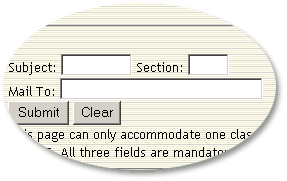

|
Data
Administration Office : Updates
Improved
Electronic Class List
by:
Celine Rivera
The electronic
class list has been redesigned to facilitate downloading.
Previously, a faculty will have to rummage thru pages and
pages of class lists to find the right file for you to download.
Now, a faculty member will only have to enter the subject/section
of the class and hi/her email address. He/she can even specify
the format of the output file. Once the request is submitted,
the file will be emailed within the day to the faculty as
an attachment.
Transcript
File Fully Migrated
by:
Celine Rivera
Finally,
the transcript file has been integrated for all the undergrad,
graduate and CSB students. The file has been migrated from
VAX to Oracle after some delay encountered due to data errors.
With this migration, the verification of the students' academic
records by the Registrar's Office staff and Vice-Deans/Graduate
School Director will be facilitated.
Staff
News
A Goodbye
and a Hopeful Hello
by:
Celine Rivera
At the
start of the 3rd term, DAO missed one of its members, Jaycee,
who went on a one-year professional/business leave. What with
a lot of requests for adhoc reports and masterfile updating
we're receiving, his absence will be truly felt. But hopefully
within the term, we'll be able to hire a new Research Assistant
who could fill the gap (some requested a female staff because
the male ITPs have outnumbered the female ITPs.
Good luck,
Jaycee!
|